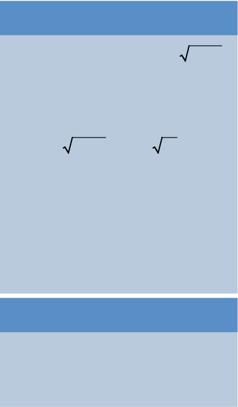

Example 3.19
Estimate the value of 256.5 ÷ 63.5
Solution
Round off both numbers to the nearest ones.
256.5 ≈ 256 to the nearest ones and 63.5 ≈ 64 to the nearest ones. It follows that,
Therefore, 256.5 ÷ 63.5 ≈ 4.
Round off both numbers to the nearest ones.
256.5 ≈ 256 to the nearest ones and 63.5 ≈ 64 to the nearest ones. It follows that,
Therefore, 256.5 ÷ 63.5 ≈ 4.

A box can contain 7 pencils. There are 251 pencils to be packed in these boxes. Approximate the required number of boxes and determine the number of pencils which will be left unpacked.
The number of boxes can be obtained by dividing the total number of pencils to be packed by the number of pencils which a box can hold.
If the number of boxes is approximated to 36, then 36 × 7 = 252 which exceeds the available number of pencils. If the number of boxes is rounded down to 35, it gives 245 packed pencils, which means 6 pencils will remain unpacked.
Therefore, 35 boxes are required and 6 pencils will be left unpacked.